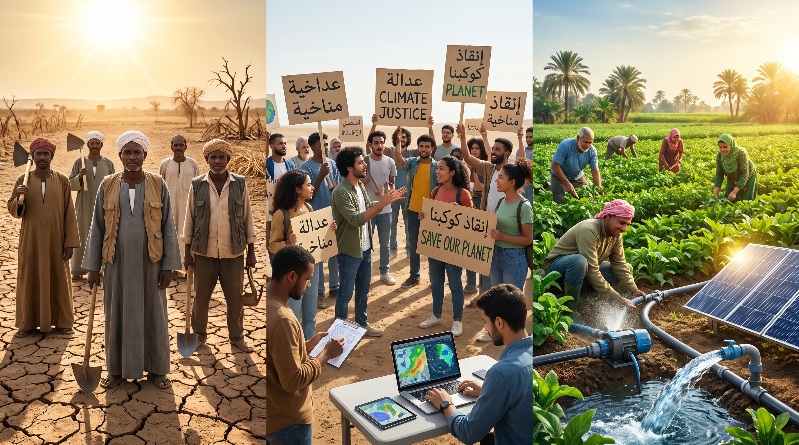

📚 القراءة التفاعلية المصورة (SB Pages 37 & 39 - Reading Texts)
💡 Climate Justice & Meteorological Frontlines: قراءة تحليلية معمقة في العدالة المناخية، ومعاناة المجتمعات المهمشة من الطقس المتطرف، ودور خبراء الأرصاد والشباب في بناء المرونة والصمود. يمكنك تشغيل القارئ الصوتي التلقائي (Auto Storyteller) للاستماع للنطق ومتابعة الترجمة والمفردات.
🖼️ Scene 1 of 4

🌱
Climate Justice & Extreme Weather
SB Pages 37 & 39 • Interactive Reader
Frontline communities and climate resilience in the face of extreme global weather
📖 Protect Nature, Protect Future (SB Pages 37 : 40)
Page 1 / 4
Around the world, climate change is not experienced equally...
💡 الترجمة المعتمدة:
حول العالم، لا تتوزع آثار التغير المناخي بالتساوي...
🎯 اختبار تقييم الفهم الشامل لدرسي 1 و 2 (35 سؤالاً وزارياً):
اختر الإجابة الصحيحة. يمنحك كل سؤال صحيح 10 نقاط فورية مع المؤثرات الصوتية والتعليل التعليمي النموذجي 🌟